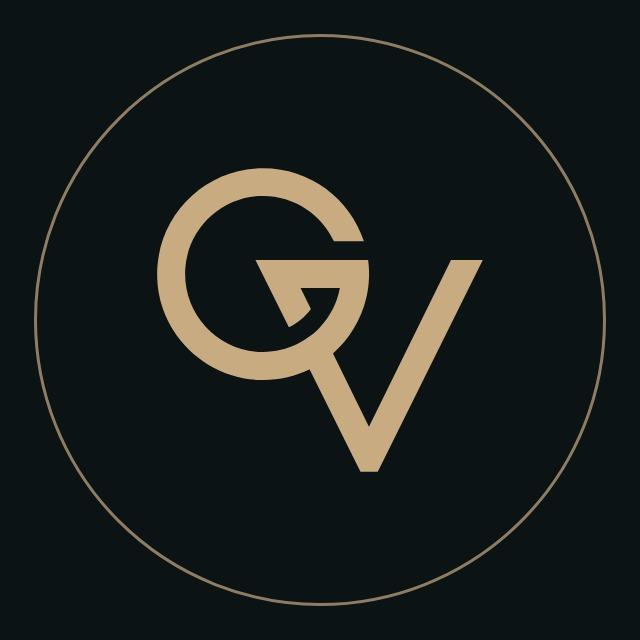
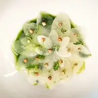
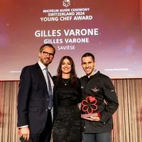

gillesvarone
gillesvarone
Auf Ihrem Profil zeigen Sie die Auszeichnungen, die Cueillette und den Garten. Meine Idee für das Raster: einzelne Fotos Ihres Hauses, und einmal ein einziges breites Bild über drei Beiträge, der Saal am Abend mit der offenen Küche dahinter.
Darüber Ihre Teller, der Saal und Sie selbst, darunter Ihr Team, die Küche, der Mittag vor den Alpen und der Weg der Betterave vom Feld bis auf den Teller. Tippen Sie einen Beitrag an, dann sehen Sie ihn gross und mit einem Text auf Französisch.


Assiettes
Distinctions